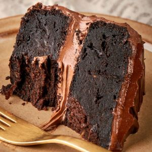
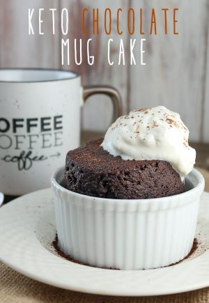

Mouth Watering Desserts
Featured This Week
Keto Chocolate Cake
The keto diet focuses on limiting your carb intake, and that includes how much sugar you eat. So, cakes, cookies, donuts, ice cream, and pastries are all off-limits. You can still enjoy them without giving up on your weight loss efforts, though, by swapping carb-heavy ingredients or cutting down on serving size of your go-to sweets. Enter keto dessert recipes. Needless to say, you'll want to choose desserts that are lower in carbs and sugar and higher in fat if you want to stick to your keto lifestyle.
Our mouthwatering desserts is really what brought this business to fame. We have an ever-growing list of delicious gourmet keto snacks and desserts that will satisfy that sweet tooth and not make you gain weight. If you cannot fathom a day or night without a sweet treat, clean tasty eats desserts are here to help.
Keto Chocolate Mud Cake
macros......
Keto Chocolate Cake
macros......